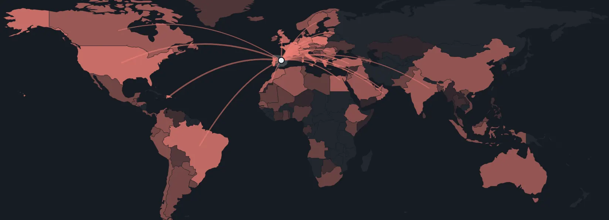

Gasto de todas las Administraciones desde 2018, sueldos de los ministros, vuelos oficiales e impuestos. Cada dato con su fuente y con lo que NO sabemos.

Cada vuelo registrado del Grupo 45 desde marzo de 2021, país a país y comunidad a comunidad. Filtra por año y por uso.
Elige cómo medirlo. «Euros constantes» quita la inflación (precios de 2018) y es la forma de saber si una partida ha subido o bajado de verdad. Pulsa una área de la leyenda para ocultarla o una barra para ver el detalle.
Variación del gasto de cada área en euros constantes. Barra a la derecha: más gasto real; a la izquierda: menos. El color solo indica el sentido, no si es bueno o malo.
Las casillas con ▼ son años en que el gasto real de esa área bajó: son los «recortes» que muestran los datos.
Dos partidas que no son una prestación directa: los sueldos de todos los empleados públicos y lo que cuesta hacer funcionar las oficinas, edificios y servicios (compras corrientes). Con su línea de tendencia 2012–2024.
De cada 100 € que gastan todas las Administraciones, cuánto va a sueldos y a mantener el funcionamiento, y en qué se va el resto.
Retribución anual bruta de presidente, vicepresidentes y ministros (12 mensualidades, sin pagas extra, sin trienios). Las cifras con ≈ y línea discontinua (2024–2026) son un cálculo mío aplicando los porcentajes oficiales a la cifra de 2023, no la cifra oficial; los huecos son datos sin verificar.
El sueldo es solo una parte. Aquí van todos los conceptos que existen, con el importe cuando hay fuente y «sin cifra publicada» cuando no la hay. No se inventa ningún total.
Altos cargos, personal eventual o de confianza y «otros». Euros corrientes y constantes de 2018. Fuente: IGAE, según prensa; el desglose de «otros» no está definido.
Lo que está documentado, con quién lo dice y sus límites. No hay una fuente oficial única con todos los vuelos, su motivo y su coste.
Nuevo · mapa interactivoMapa de calor de los 7.697 vuelos (2021–2026)
Dato oficial de ingresos públicos y, aparte, lo que dicen quienes cuentan «subidas» y quienes cuentan «rebajas».
Transparencia también es decir qué falta. Esto está en la lista de trabajo y no se publicará sin documento verificable.
La lista de trabajo y las fuentes primarias están en el repositorio: datos/gastos-politicos.